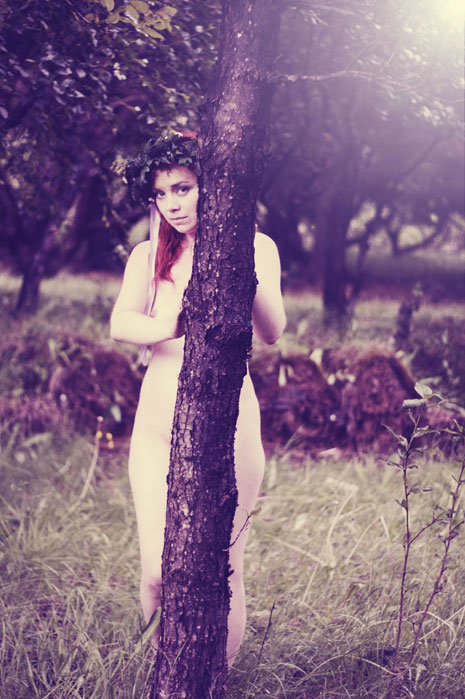
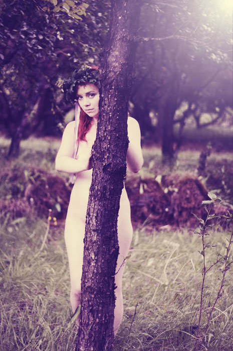

Episode 11: Secret Garden
With 10 Episodes past, Kitty felt it time to pull out the true challenge to body consciousness and produce an episode without costume. A bearing of the soul for all women involved. For the first time, the crew was all female. Kitty took the stunning track Tunglið by Ólafur Arnalds and set a piece which involved the women being free in a secret garden whilst the rain poured down. The final media produced has become secondary to the experience of the day in which women with various levels of image hang ups truly left behind their barriers, every one of them becoming naked inside and out.
- Producer, Concept and Artistic Direction: Kitty Von-Sometime
- Assistant Producer and Editor: Susan Pettie
- Assistant Director: Anne Walsh
- Camerawomen: Brynja Dögg Friðriksdóttir and Elin Gylfadttir
- Official Photographer: Katrín Ólafs
- Post Production: Michael Todd
- Additional Art: Fiona Cribben Illustration
- Head Runner: Fríða Einarsdóttir
- Runners: Hanna Marinosdóttir and Svana Gunnarsdóttir
- Head pieces: Thorunn Ivarsdóttir
- Collars: Steinunn Jónsdóttir
- Make up: Sunna Rán and Ásdís Þula Þorláksdóttir
- Official Music: Tunglið by Ólafur Arnalds
- 10th July 2010
 
